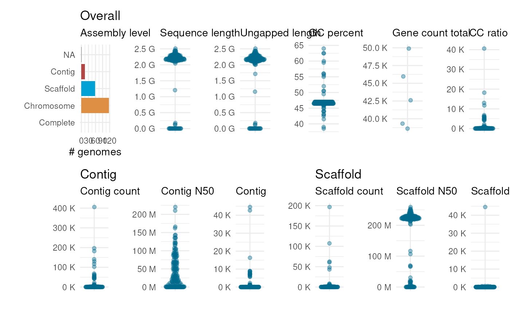

Plot statistics on genome assemblies on the NCBI
Arguments
- ncbi_stats
A data frame of summary statistics for a particular taxon obtained from the NCBI, as obtained with the function
get_genome_stats.- user_stats
(Optional) A data frame with assembly statistics obtained by the user. Statistics in this data frame are highlighted in red if this data frame is passed. A column named accession is mandatory, and it must contain unique identifiers for the genome(s) analyzed by the user. Dummy variables can be used as identifiers (e.g., "my_genome_001"), as long as they are unique. All other column containing assembly stats must have the same names as their corresponding columns in the data frame specified in ncbi_stats. For instance, stats on total number of genes and sequence length must be in columns named "gene_count_total" and "sequence_length", as in the ncbi_stats data frame.
Examples
# Example 1: plot stats on maize genomes on the NCBI
## Obtain stats for maize genomes on the NCBI
ncbi_stats <- get_genome_stats(taxon = "Zea mays")
plot_genome_stats(ncbi_stats)

## Plot stats
# Example 2: highlight user-defined stats in the distribution
## Create a data frame of stats for fictional maize genome
user_stats <- data.frame(
accession = "my_lovely_maize",
sequence_length = 2.4 * 1e9,
gene_count_total = 50000,
CC_ratio = 1
)
plot_genome_stats(ncbi_stats, user_stats)